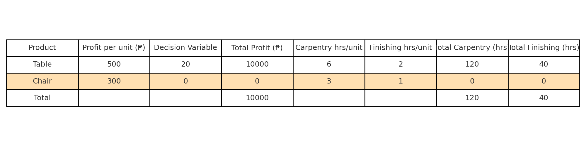
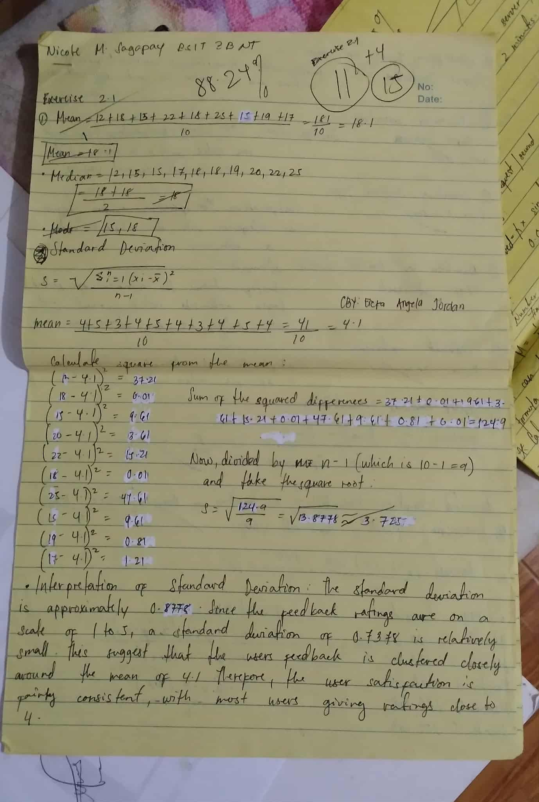
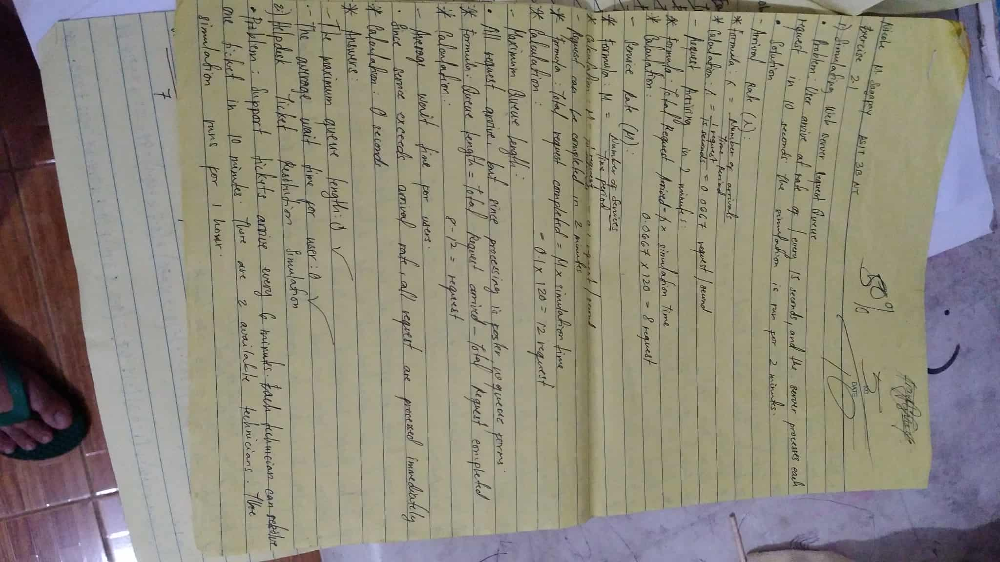
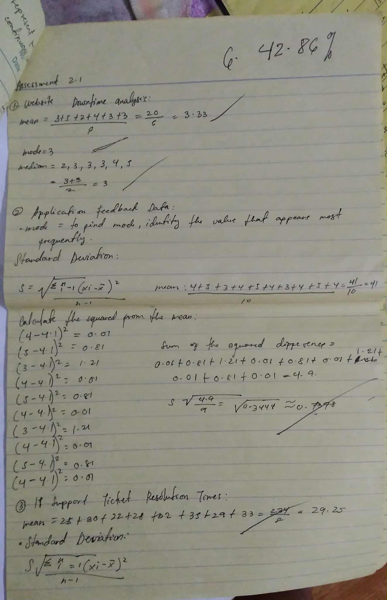
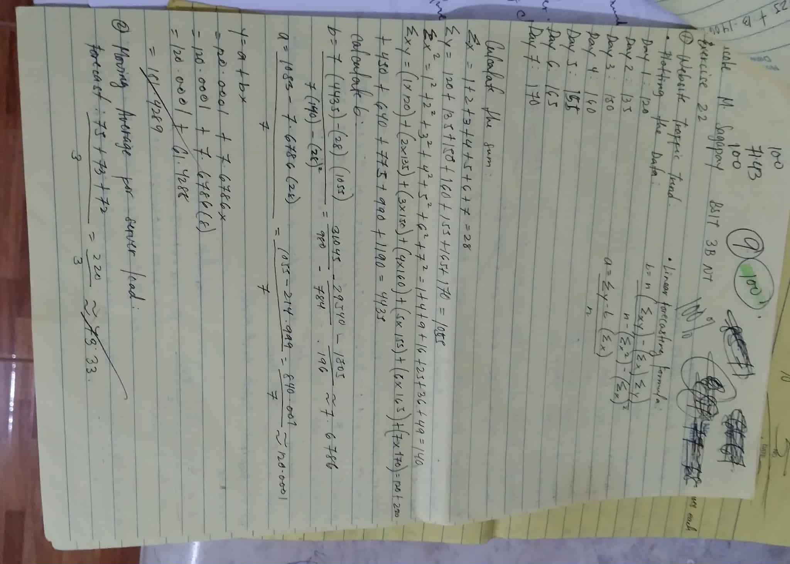
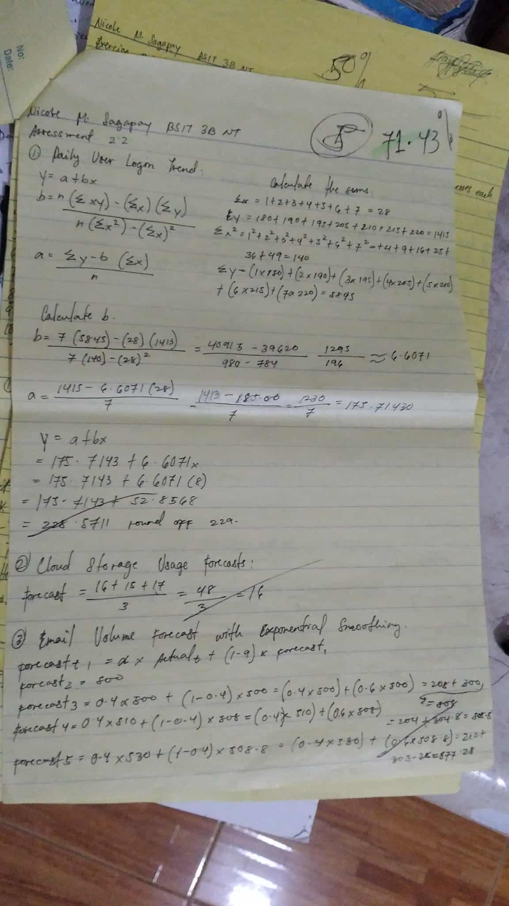
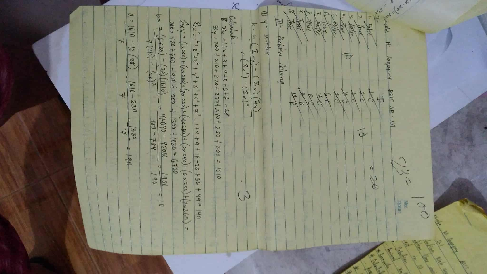

About This Course
This portfolio documents my learning journey in Quantitative Methods. Coverage includes: optimization (linear programming), statistical analysis, forecasting, and a midterm case study project.
Learning outcomes: formulate LP problems, use Excel/SPSS, interpret results, and apply models to decision-making.
Unit 1 — Optimization
Example LP Problem
Maximize profit from tables (₱500 each) and chairs (₱300 each) given carpentry (120 hrs) and finishing (60 hrs). Optimal solution using Excel Solver: 20 tables, 0 chairs → Profit = ₱10,000.
Unit 2 — Statistics & Forecasting
Dataset
Monthly Sales (₱): 50k, 55k, 52k, 60k, 62k, 65k
A. Excel/SPSS Results
- 3-Month Moving Average: Forecast (Months 7–9) = 59,000; 62,000; 63,000
- Regression Model: Sales = 48,500 + 2,700×Month; R² = 0.92
B. Interpretation
Both methods show an upward trend. Regression fits the data strongly (R² close to 1), making it more reliable for long-term forecasting, while the moving average smooths short-term fluctuations but lags behind actual sales.
C. Mini Forecasting Model
In Excel/SPSS:
- Use
=AVERAGE()to compute moving averages. - Use
LINESTor regression tools for trend analysis. - Insert charts to compare actual sales vs forecast.
Midterm Project — EOQ Case Study
Case: Quick Sale Mart Inventory
The store faces high holding costs vs frequent ordering. EOQ model applied:
- Annual demand D = 12,000 units
- Ordering cost S = ₱500/order
- Holding cost H = ₱2/unit/year
A. EOQ Calculation
EOQ = √(2DS/H) = √(2×12,000×500 / 2) = 2,449 units
B. Interpretation
Ordering ~2,449 units minimizes the sum of ordering and holding costs. This balance reduces total expenses while preventing frequent stockouts.
C. Case Study Write-Up (Summary)
EOQ Interpretation & Case Study Write-Up
B. Interpretation
Ordering ~2,449 units minimizes the combined ordering and holding costs. This balance significantly reduces total inventory expenses while preventing frequent stockouts. By identifying this economic order quantity, businesses can ensure that they order neither too frequently (which increases ordering costs) nor in overly large quantities (which increases holding costs).
C. Case Study Write-Up (Summary)
Introduction:
The case focuses on the common problem of balancing inventory costs,
where businesses must carefully manage the trade-off between ordering costs and holding costs.
An inefficient policy may lead to either higher expenses or frequent stockouts.
Method:
The Economic Order Quantity (EOQ) formula was applied,
along with its assumptions: steady demand, fixed ordering cost, and consistent holding cost per unit.
This method determines the most cost-efficient order size.
Results:
The optimal batch size was calculated at 2,449 units.
This result minimizes the total cost of inventory operations and provides a clear guideline
for when and how much to order.
Discussion:
While the EOQ model provides a theoretical optimum, real-world constraints such as
supplier minimum order quantities (MOQs), storage capacity, seasonal demand variations,
and cash flow limitations may influence the actual ordering policy.
Conclusion:
The EOQ model offers a reliable and cost-efficient ordering strategy.
It helps businesses minimize inventory-related costs, though decision-makers must
adapt the model to practical realities to achieve the best results.
D. Reflection
“This case study taught me how EOQ helps in inventory management by finding the balance between ordering and holding costs. I also realized that real businesses may need to adjust EOQ based on supplier agreements and seasonal demand.”
My Activities & Reflection
Exercise 2.1
Score: 88.24%
I scored high in this activity because I was able to apply the formulas correctly. Although not perfect, this showed that I understood the lesson well but still needed to be more careful in my calculations to reach 100%.
Exercise 2.1 (Solutions)
Score: 50%
My solution sheet only earned half of the total points. This means I understood some steps but missed or incorrectly explained the others. It reminded me that showing clear, step-by-step solutions is just as important as getting the final answer.
Assessment 2.1 (Solutions)
Score: 42.86%
I did not perform well in this assessment. I missed several important steps in the solutions, which greatly lowered my score. This taught me the importance of reviewing concepts before an assessment and carefully organizing my answers.
Exercise 2.2
Score: 100%
I achieved a perfect score in this exercise. This means I fully understood the lesson and corrected my mistakes from the previous activities. It gave me more confidence in solving problems accurately.
Assessment 2.2
Score: 71.43%
This assessment showed improvement compared to Assessment 2.1. While I made progress, I still lost points due to minor errors in my calculations and explanations. It reminded me that consistency and focus are key in achieving higher scores.
Assessment Unit 2 (Overall)
Score: 100%
I successfully earned a perfect score in the overall Unit 2 assessment. This shows that I learned from my mistakes in earlier activities and was able to apply the concepts correctly. It was a strong finish that boosted my confidence and proved my growth in this unit.
Unit 3 — Simulation
Content to be added after Midterm.
Unit 4 — Decision Analysis / Game Theory
Content to be added after Midterm.
Unit 5 — System Modeling
Content to be added after Midterm.
Final Project
Content to be added after Midterm.
Reflections & Learnings
To be written after completion of the course.
Contact / Feedback
Email: nicole.sagapay@email.com